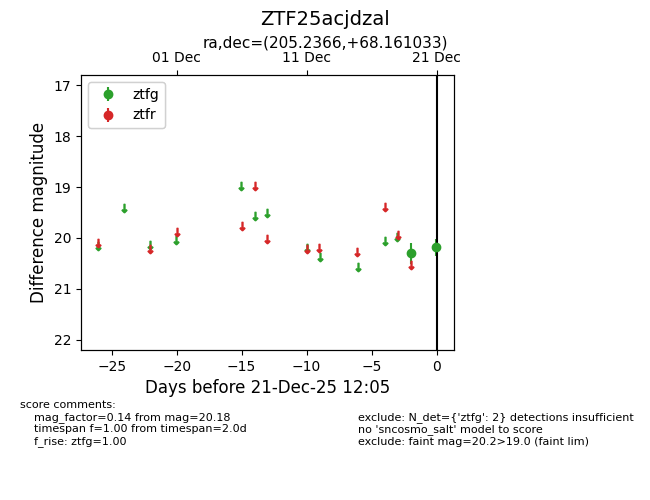
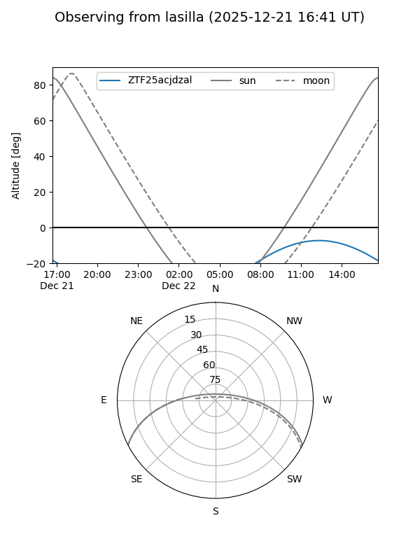
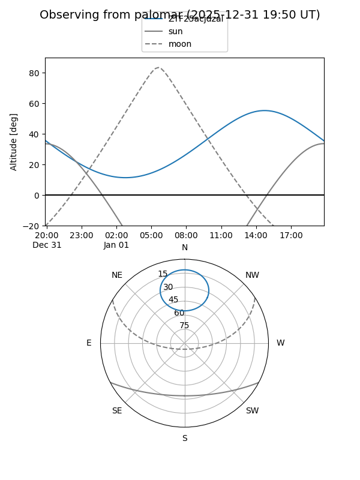

ZTF25acjdzal
Target ZTF25acjdzal at 2025-12-31 18:00
Aliases and brokers:
FINK: link
Lasair: link
ALeRCE: link
alt names
ZTF25acjdzal (ztf,fink_ztf)
Coordinates:
equatorial (ra, dec) = 205.2366,+68.16103
equatorial (HMS+DMS) = 13:40:56.79,+68:09:39.72
galactic (l, b) = (116.0477,+48.30009)
Flags:
Photometry:
last ztfg=20.18
2 ztfg detections
Lightcurve

Visibility


Additional plots